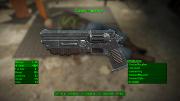

- VÍDEO
- HISTORIA
- GAMEPLAY
- CANCIÓN
VÍDEO
HISTORIA
Bienvenido al universo F2378, uno parecido al nuestro, pero mucho más avanzado. La Tierra no es la misma desde el atentado que cambió la historia de la humanidad: muchas vidas fueron perdidas, y los terroristas se salieron con la suya. Desde entonces, el único objetivo de la asociación “ACAT” ha sido el de ajusticiar a los criminales, pero no han tenido éxito.
Tres años después del fatídico suceso, el líder de la asociación, Alan Porter, ha hecho un descubrimiento: la manera de viajar en el tiempo. La última esperanza de ACAT se centra en este proyecto, ya que solo así podrán descubrir qué ocurrió el seis de febrero de 2020. Formas parte de un valiente equipo de soldados de ACAT enviado a enero de 2020 para descubrir cómo los terroristas planearon el ataque y saber quiénes fueron los responsables. ¿Conseguirás completar la misión? ¿Vengarás a los caídos?
GAMEPLAY
06/02/2020 es un juego en tercera persona de disparos y puzles, en el cuál el objetivo no será matar a todo lo que se ponga en tu camino, sino buscar pistas sin ser descubierto y utilizar todo de lo que dispongas. No todo son las armas: deberás utilizar diferentes objetos para completar las misiones, en las que se te exigirá estar atento a tu alrededor y a los detalles.
-Podrás nombrar y crear al personaje que te acompañará durante esta historia físicamente como quieras.
-En 06/02/2020 no destacará el que mejor puntería tenga, si no el que sepa usar todas sus posibilidades y opciones, ya que el objetivo principal es sacar información y averiguar que pasó ese día.

-Armas y objetos: En 06/02/2020 encontrarás una gran diversidad de objetos y armas, divididos en categorías de fuerza y rareza, son: común, poco común, rara, muy rara y la más rara y fuerte, ultrarara. Estos objetos y armas se conseguirán como progreso en el juego, se pueden vender, comprar e intercambiar.
-A partir de la categoría rara serán costumizables y con ciertas piezas intercambiables de mejora.
CANCIÓN
06/02/2020
sumérgete a través del tiempo para averiguar qué ocurrió el seis de febrero de 2020. Descubre las pistas y resuelve el misterio. ¿Saldrás con vida?